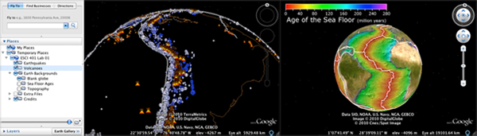
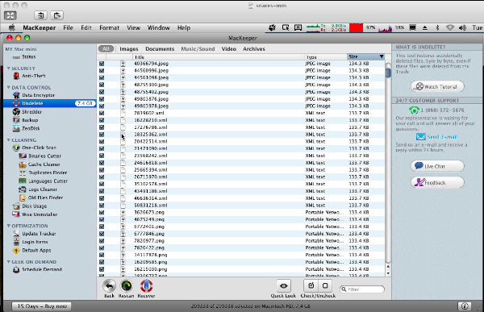
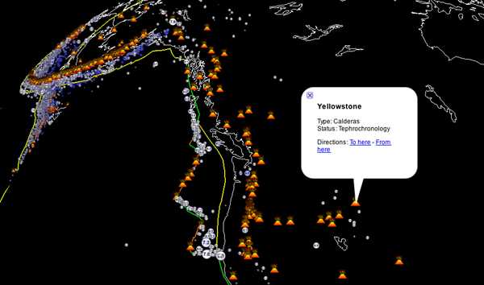
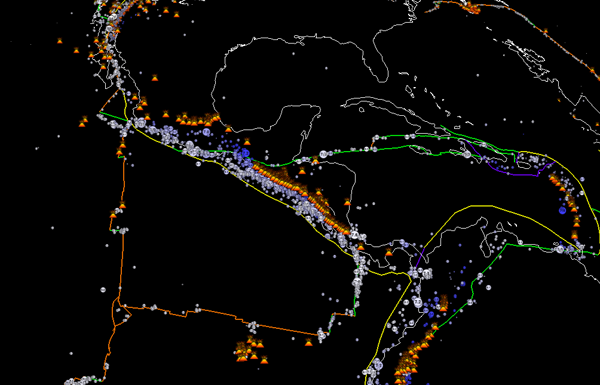
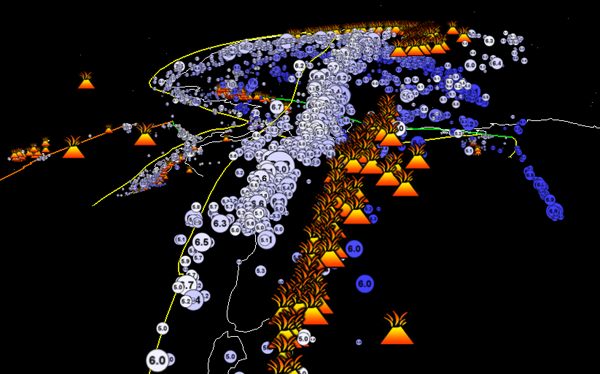
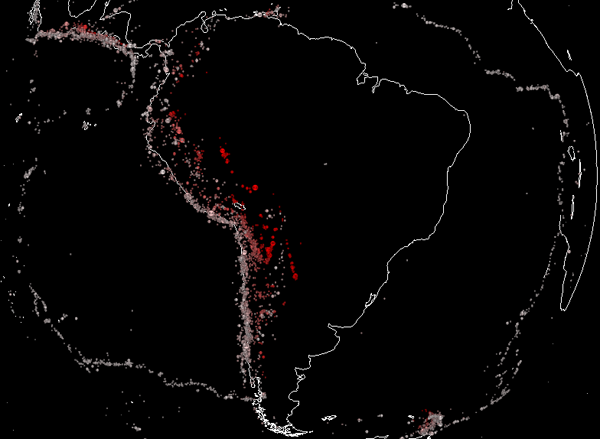
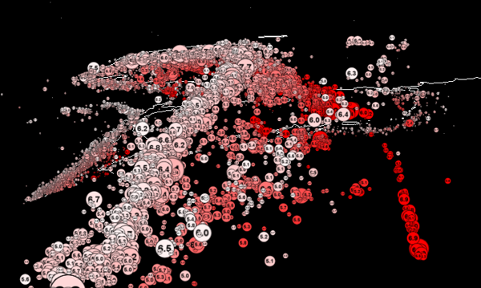
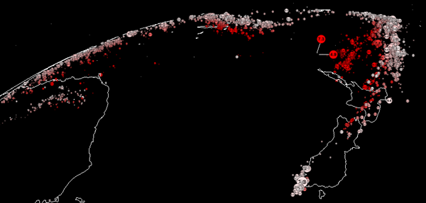
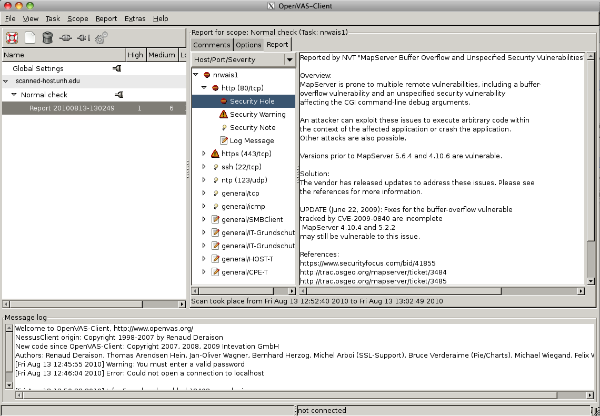

08.30.2010 12:53
Plate boundaries lab - In Google Earth
Students will be doing the lab today
to kick off Margaret's ESCI401 here at UNH.
lab01.kmz [9MB] or http://tinyurl.com/esci401-lab01.
Created by Kurt Schwehr and Margaret Boettcher for the ESCI 401 course at the University of New Hampshire, August 2010. Lab adapted from from Dale Sawyer's Discovering Plate Boundaries. Sources of material:
ESCI 401 Lab 1 - A Plate Tectonics Jigsaw Puzzle - Google Earth Visualization by Schwehr and Boettcher is licensed under a Creative Commons Attribution-NonCommercial-ShareAlike 3.0 Unported License.
The very rough source code that I used to create the lab is available: esci401-lab01-20100830.tar.bz2. I used this code to generate basic files, but I did a lot of hand tuning to get the final results.
lab01.kmz [9MB] or http://tinyurl.com/esci401-lab01.

Created by Kurt Schwehr and Margaret Boettcher for the ESCI 401 course at the University of New Hampshire, August 2010. Lab adapted from from Dale Sawyer's Discovering Plate Boundaries. Sources of material:
- Earthquakes are from the ANSS (Advanced National Seismic System) Catalog
- Volcanoes are from the Smithsonian Volcano Excel Workbook
- Topography and seafloor age images are from NOAA's NGDC: Science on a Sphere (SOS) - Sea Floor Age.
- The shore line is the World Coast Line (WCL) for 1:5,000,000
- Plate boundaries are derived from Carlton's plates_quakes_countries.zip
ESCI 401 Lab 1 - A Plate Tectonics Jigsaw Puzzle - Google Earth Visualization by Schwehr and Boettcher is licensed under a Creative Commons Attribution-NonCommercial-ShareAlike 3.0 Unported License.
The very rough source code that I used to create the lab is available: esci401-lab01-20100830.tar.bz2. I used this code to generate basic files, but I did a lot of hand tuning to get the final results.
08.29.2010 07:40
Clocks
A seriously geeky clock:
We need to get a new clock for the table across the room in the bedroom. It would be best if it was readable at night without my glasses (my vision isn't that bad, but a lighted display is essential) and if it reset itself using radio broadcasts (refered to as a radio-controlled clock) as we have so many power outages. More features would be nice (weather, AM/FM/Scanner, etc), but I don't want a cluttered display. What to people recommend?
NIST has a list of manufactures of time and frequency receivers.
I'd like to spend less than $100.
Comment here: Which clock should I get?
We need to get a new clock for the table across the room in the bedroom. It would be best if it was readable at night without my glasses (my vision isn't that bad, but a lighted display is essential) and if it reset itself using radio broadcasts (refered to as a radio-controlled clock) as we have so many power outages. More features would be nice (weather, AM/FM/Scanner, etc), but I don't want a cluttered display. What to people recommend?
NIST has a list of manufactures of time and frequency receivers.
I'd like to spend less than $100.
Comment here: Which clock should I get?
08.26.2010 08:02
AIS Channel Confusion
Update 2010-Aug-30: Christoph L
pointed me to the details behind this.
AIS users CT to NC, head's up! [Panbo] has a link to the full
PDF of USCG
Alert 0710. Full text at the end.
Uh... are other places actually using non-standard AIS channels? And why is the USCG refering to the 2nd channel as an "alternate"? You would be crazy (and not legal) to be using a single channel transmit system and I would recommend single channel receivers not be used on ships.
Reminder of Proper Channel for AIS [MarineLink]
Full text of Alert 0710:
Uh... are other places actually using non-standard AIS channels? And why is the USCG refering to the 2nd channel as an "alternate"? You would be crazy (and not legal) to be using a single channel transmit system and I would recommend single channel receivers not be used on ships.
Reminder of Proper Channel for AIS [MarineLink]
The U.S. Coast Guard Navigation Center issued a special notice reminding mariners that any vessel operating in U.S. waters equipped with an Automatic Identification System (AIS) should confirm that the proper channel frequency has been selected. The standard default AIS frequency is 161.975 MHz (AIS1 or channel 87B). The alternate AIS frequency is 162.025 MHz (AIS2 or channel 88B). These frequencies can be verified through the manufacturerâÄôs operation/ownerâÄôs manual for the AIS installed. (8/23/10).This sounds like C2CEN was experimenting with base stations.
Full text of Alert 0710:
Between July 27 and August, 2010, while conducting development testing of its Nationwide Automatic Identification System (NAIS), the Coast Guard inadvertently tele-commanded most AIS users transit- ing the Eastern United States between lower Connecticut and North Carolina to switch to AIS fre- quencies other than the AIS default frequencies (161.975 MHz - Channel 87B - 2087 and 162.025 MHz - Channel 88B - 2088). As a result, those users within uniquely defined channel management regions (as shown in the picture) will neither see nor be seen by vessels operating on the default AIS channels when within these regions. Similarly, vessels operating on default frequencies will not see or be seen by those vessels that were inadvertently switched to other frequencies. No other AIS us- ers or areas are impacted. One of the lesser known and potent features of AIS is its ability to operate on multiple channels within the VHF-FM marine band. This frequency agility ensures AIS can be used even when the default channels are otherwise unavailable or compromised. In such conditions, competent authorities, such as the Coast Guard, can use an AIS base station to tele-command shipborne AIS devices to switch to other more appropriate channels when within defined regions of 200 to 2000 square nautical miles. This can be done automatically (and without user intervention) through receipt of the AIS channel management message (AIS message 22) or manually entered via the AIS Minimal Keyboard Display (MKD) or similar input device. Once commanded or manu-ally entered, the channel management information will stay in memory for 5 weeks or until an affected vessel moves more than 500 nautical miles from the defined region. AIS channel management commands can only be manually overridden or erased by the user via the unitâÄôs channel (regional frequencies) management function1 or automatically overridden via another channel management message for the same defined region. Reinitializing or resetting your AIS or transmission channels will not necessarily reprogram your unit back to the default channels. Commencing September 1st and continuing for the subsequent 5 weeks, the Coast Guard will broadcast new channel management messages that will tele-command all AIS users back to default channels. This broadcast will occur each hour between hh.05:30 and hh.05:59, but may change as needed. To ensure that these messages are received, they will be broadcast on Channel 70--Digital Selective Calling (DSC), which is also monitored by all type-certified shipboard AIS. While this will ensure all AIS users will get the message regardless of what AIS channel the unit is operating on, it could however cause a minor inconvenience to owners of older DSC radios who may receive an alert (tone) upon receipt of this message. It will have no other effect on DSC radios. AIS users are encouraged to inform others whom they believe may be affected and are therefore not being seen by others. All AIS users are reminded to maintain their AIS in effective operating condition and to validate their AIS data prior to each voyage and as needed.
08.25.2010 09:30
BP not sharing AIS with NAIS and ERMA
This is a case where I must set the
record straight now that PortVision has issued a
press release. I fully understand that it will likely be a long
time before the response effort is completed.
For the Deepwater Horizon incident in the Gulf of Mexico, the primary situational awareness tool for responders and the public was provided by the Environmental Response Management Application (ERMA). I wrote the AIS software that drove ERMA and used the USCG's NAIS data feed to it. I can say definitely that NAIS received NO data from BP or PortVision. I talked to BP and requested that they at least send the output from one or more of their receivers out at the well area to the USCG NAIS system. The process of sending data to the USCG is really easy and I offered to give BP the contact information of the people at the USCG that could make this happen. BP said, "NO. We already are showing the data on a single computer display that the Coast Guard can view." So the AIS data collected by BP and PortVision were in no way distributed to the rest of the response teams through ERMA. There is a fiber ring out on the seafloor in the Gulf of Mexico getting the data back to the shore, but it did not make it to ERMA.
The person at BP complained that he could not give me the data and did not know who I was. I reminded him that I was requesting that he give the data to the USCG through the official USCG NAIS system, not to me. However, he seemed unable to acknowledge that I was not requesting the data come through me. I then tried to explain that the USCG would then distribute the data back to me through normal approved channels. I do not know why this was difficult for BP.
Although PortVision may have provided excellent support to BP throughout the crisis, unfortunately, due to BP, none of the AIS data made it to the ERMA interface for the responders in the Gulf.
On a positive note, the ERMA team worked with FindMeSpot to track a number of response teams. FindMeSpot worked much better in the Gulf of Mexico than my experiences with it in New England.
The full press release: PortVision Vessel-Tracking for Gulf Cleanup Ops
Trackbacks/Reposts: BP not sharing AIS with NAIS and ERMA [CSHEL]
For the Deepwater Horizon incident in the Gulf of Mexico, the primary situational awareness tool for responders and the public was provided by the Environmental Response Management Application (ERMA). I wrote the AIS software that drove ERMA and used the USCG's NAIS data feed to it. I can say definitely that NAIS received NO data from BP or PortVision. I talked to BP and requested that they at least send the output from one or more of their receivers out at the well area to the USCG NAIS system. The process of sending data to the USCG is really easy and I offered to give BP the contact information of the people at the USCG that could make this happen. BP said, "NO. We already are showing the data on a single computer display that the Coast Guard can view." So the AIS data collected by BP and PortVision were in no way distributed to the rest of the response teams through ERMA. There is a fiber ring out on the seafloor in the Gulf of Mexico getting the data back to the shore, but it did not make it to ERMA.
The person at BP complained that he could not give me the data and did not know who I was. I reminded him that I was requesting that he give the data to the USCG through the official USCG NAIS system, not to me. However, he seemed unable to acknowledge that I was not requesting the data come through me. I then tried to explain that the USCG would then distribute the data back to me through normal approved channels. I do not know why this was difficult for BP.
Although PortVision may have provided excellent support to BP throughout the crisis, unfortunately, due to BP, none of the AIS data made it to the ERMA interface for the responders in the Gulf.
"We have worked closely with BP and the Unified Command operations team in support of real-time vessel-tracking activities related to the Gulf incident response and restoration effort," said Dean Rosenberg, chief executive officer.I hope that oil and gas companies will work more in the future with the USCG to get AIS feeds from platforms and remote installations to the USCG NAIS system before incidents occur and make a plan to have satellite or cellular data up links to NAIS setup on the fly for incidents that happen away from fixed infrastructure. If you are a first responder or oil & gas company and want to work with the USCG to make this happen, I can put you in touch with the right people at the USCG (and give you a couple setup tips). It's not that hard to setup.
On a positive note, the ERMA team worked with FindMeSpot to track a number of response teams. FindMeSpot worked much better in the Gulf of Mexico than my experiences with it in New England.
The full press release: PortVision Vessel-Tracking for Gulf Cleanup Ops
PortVision, provider of business intelligence solutions for the maritime industry, announced that BP has used the company's PortVision vessel-tracking service and PV-OnBoard battery-operated satellite trackers to enhance and accelerate response and restoration operations related to the April 20, 2010, Deepwater Horizon incident. "The PortVision service has significantly improved how we have managed vessel activity related to the Gulf response and restoration operation," said Scott Neuhauser, Deputy Branch Director for Plaquemines Parish with BP. "PortVision has given us significantly greater visibility into what's occurring in the field so that we could assess progress and more effectively allocate the more than 30,800 personnel, 5,050 vessels and dozens of aircraft that are engaged in the response effort." "We have worked closely with BP and the Unified Command operations team in support of real-time vessel-tracking activities related to the Gulf incident response and restoration effort," said Dean Rosenberg, chief executive officer. "This includes providing a combination of hardware and customized software, extensive support services, and our PV-OnBoard satellite trackers. The PortVision service offers significant benefits in incident-response and other maritime intelligence applications, and also enables responders and other parties to access historical AIS and satellite data for a variety of purposes, from policy development and training to litigation support and the verification of vessel operating fees and service charges." The PortVision service leverages the world's only comprehensive database of AIS real-time and historical tracking data to provide detailed visibility into commercial vessel activity, from port arrivals and departures to ship movements on the open sea. To track smaller vessels that are not equipped with AIS transponders, BP and the Unified Command team have used the PortVision service with data provided by the company's PV-OnBoard battery-operated satellite trackers, which are now being deployed on the Louisiana Gulf Coast. Information from the combination of AIS and satellite data has simplified the team's challenging task of monitoring and managing the many ships, fishing boats, skimmers and barges that have been operated by multiple organizations in adjacent and often overlapping response areas. Additionally, PortVision has customized its offering for BP and the Unified Command team, adding screen overlays of divisional response areas throughout the affected Gulf regions, and color-coding vessel types within these areas using the PortVision VesselZones feature. The ability to create user-defined VesselZones simpifies vessel viewing, tracking and alerts while streamlining and enhancing incident response.
Trackbacks/Reposts: BP not sharing AIS with NAIS and ERMA [CSHEL]
08.25.2010 08:35
Unit Tests for XCode / ObjC
I've been slowly puttering along with
Objective-C and XCode (much slower than I had hoped). I find the
Cocoa style of development surprising and I don't always follow
what people are saying. I think I'm biased by the original XForms
GUI on the SGI, which took me about 15 minutes to totally get and I
had my first app looking and working great by the next day. I think
I would be quicker at Cocoa/XCode/InterfaceBuilder if I had better
short term memory. I feel like I have to keep too much in my head
at one time. I am way more comfortable with emacs where I have a 23
inch and 19 inch monitor completely covered with my code with none
of the visual noise that comes from XCode and InterfaceBuilder. But
that said, I still am making progress and I am starting to grok
ObjC.
I just found out that XCode has unit tests built in using OCUnit. I try to convince everyone who will listen that, for anything other than throw away code, unit tests are very important and unit tests are absolutely critical in code doing scientific calculation (ahem... GSF really really needs unit tests). I really appreciate everyone who has made videos explaining parts of XCode, ObjC, Cocoa, and InterfaceBuilder.
I just found out that XCode has unit tests built in using OCUnit. I try to convince everyone who will listen that, for anything other than throw away code, unit tests are very important and unit tests are absolutely critical in code doing scientific calculation (ahem... GSF really really needs unit tests). I really appreciate everyone who has made videos explaining parts of XCode, ObjC, Cocoa, and InterfaceBuilder.
Unit testing from Peter Hosey on Vimeo.
08.24.2010 10:38
undeleting files from a Mac HFS+ partition
I've accidentally delete data files
from a Mac server that we have removed from the backup pool as it
is in the process of being decommissioned. Unfortunetly, the system
was removed from the backup system more than 3 months ago, so the
backup tapes for this machine have been recycled. I've been looking
for undelete solutions, but I don't want to drop $ on something
that is not likely to work. I gave the 15 day trial of MacKeeper a
go and it did great for a lot of files (mostly iphoto pics that
I've deleted), but at 7.4GB of potential files (out of 60GB of
space containing deleted files), it basically hung the machine with
100% load on one CPU and things were unresponsive. The last I had
checked before was that after about 6 hours it had found 2GB of
files it could undelete. Here is the hog that was killing the
machine:
Here is what the display looked like when it was stuck on the mini:
ps aux | grep 30881 schwehr 30881 98.9 33.6 856556 704724 ?? Rs Wed08AM 1398:47.27 \ webdavfs_agent -o nobrowse http://127.0.0.1:55172 /Volumes/D4841BF6-8C4B-4CCA-8334-F2C73CEF1E01I might try a more powerful machine next time. I started with trying this with a MacMini Core2 Duo 2GHz with 2GB of RAM. My next attempt will be with a MacPro 3.3GHz Quad-Core Xeon with 8GB of RAM.
Here is what the display looked like when it was stuck on the mini:

08.23.2010 23:07
Critters in the yard
Doing some yard work over the
weekend, I ran into these two creatures. First is Argiope
aurantia, which was identified for me by a bunch of friends
over the intertubes. Thanks all! It's nice to know:
And for those who don't like spiders...
Like other members of Argiope they are considered harmless to humans.Her body was about the size of a quarter.
And for those who don't like spiders...
08.23.2010 13:37
Quakes, Volcanoes, and plate Margins
I've fixed up my quake visualization
some, added volcanoes and added plate boundaries. I think it's
starting to look pretty good. First, the volcanoes. I downloaded
the Excel spreadsheet (ahem... not a great way to publish data) and
did a save as CSV. I then used the python csv module to read
in the volcanoes and spit out KML. I had made my own icon, but
decided that Google's looks tons better. The plate boundaries took
a little more work.
wget http://serc.carleton.edu/files/eet/seismicwave/plates_quakes_countries.zip unzip plates_quakes_countries.zip ogr2ogr -f SQLite plates.sqlite plat_lin.shp ./platesdb2kml.py sqlite3 plates.sqlite .schemaThe trickiest part is that the geometry is stored in the SQLite database as WKB (Well Known Binary). The database schema:
CREATE TABLE geometry_columns (
f_table_name VARCHAR,
f_geometry_column VARCHAR,
geometry_type INTEGER,
coord_dimension INTEGER,
srid INTEGER,
geometry_format VARCHAR
);
CREATE TABLE 'plat_lin' (
OGC_FID INTEGER PRIMARY KEY,
GEOMETRY BLOB,
'margin_typ' VARCHAR
);
CREATE TABLE spatial_ref_sys (
srid INTEGER UNIQUE,
auth_name TEXT,
auth_srid TEXT,
srtext TEXT
);
I used shapely
to parse the WKB. It's a little tricky as some items come back as
LineString objects and others as MultiLineStringObjects (with more
than one line in them). I'm not a huge fan of ESRI shape files
(shp).
import sqlite3
from shapely import wkb
import shapely
cx = sqlite3.connect('plates.sqlite')
cu = cx.cursor()
margin_types = [item[0] for item in cx.execute('SELECT DISTINCT(margin_typ) FROM plat_lin;')]
o = open('margins.kml','w')
for margin in margin_types:
o.write('<Folder><name>{margin}</name>\n'.format(margin=margin))
for section in cu.execute('SELECT ogc_fid, geometry FROM plat_lin WHERE margin_typ= :margin;',{'margin':margin}):
geom = wkb.loads(str(section[1]))
lines = []
if isinstance(geom, shapely.geometry.linestring.LineString):
# single line
lines.append(geom.xy)
pass
elif isinstance(geom, shapely.geometry.multilinestring.MultiLineString):
# multiline
for line in geom:
lines.append(line.xy)
else:
sys.exit('Whoops')
for line in lines:
print 'len_line:',len(line[0])
o.write('''<Placemark>
<styleUrl>#{margin}</styleUrl>
<LineString><altitudeMode>absolute</altitudeMode><coordinates>\n'''.format(margin=margin))
for i in range(len(line[0])):
x = line[0][i]
y = line[1][i]
z = 700000
print '\t',x,y,z
o.write('\t\t{x},{y},{z}\n'.format(x=x,y=y,z=z))
o.write(' </coordinates></LineString></Placemark>''')
o.write('\n</Folder> <!-- {margin} -->\n\n'.format(margin=margin))
More images from the visualization as it evolves... Margaret
suggested switching the quake color scheme to be white to blue,
which helps the volcanoes stand out separately from the
quakes.


08.19.2010 10:56
ANSS quake catalog in Google Earth
I've been working on creating a
Google Earth visualization of the ANSS quake
catalog. I found their ftp site and the
CNSS
Composite Catalog Format. These allowed me to pull their entire
catalog pretty quickly (meaning an hour or so):
I then worked up some icons that show the magnitude of the quake as a number in the circle. I slightly varried the size of the icons to help give a sense within the magnitude integral number (not sure this is working) by using a resize. The entire icon creation is done with imagemagick's convert. e.g.
Because the icons for quakes in the magnitude range of 4.5 to 5.9 are quite small, I have the highlight mode for the style set to blow up the label to a very large readable presentation.
For an alternative visualization (that includes time, which I skipped), check out Duncan Agnew's Upside-Down Quakes (UDQ).
Here are some images from the visualization:
wget -r --no-directories --no-parent --no-host-directories ftp://www.ncedc.org/pub/catalogs/anss/I then parsed the text records to build an SQLite database. That let me filter the records and start building the visualization with this SQL query:
SELECT * FROM anss_events WHERE mag > 4.5 ORDER BY timestamp DESC LIMIT 100000I started by wrapping the entire globe in black. The normal Google Earth surface is distracting. I then grabbed the World Coast Line (designed for 1:5M) from NGDC and put the shorelines up at 700km above 0.
I then worked up some icons that show the magnitude of the quake as a number in the circle. I slightly varried the size of the icons to help give a sense within the magnitude integral number (not sure this is working) by using a resize. The entire icon creation is done with imagemagick's convert. e.g.
convert \ -fill black -draw "circle 30,30 10,10" \ -fill white -draw "circle 30,30 11,11" \ -pointsize 28 -fill black -annotate +10+40 "7.2" \ -resize 55% quake-1.png 7.2.pngI can then use the white icons and color them with a style in google earth. I took all of the quake depths and moved them up 700 km in the air so that deeper quakes are visible below the hanging shoreline. This should let people see the subducting slabs pretty easily. I start the quakes at +10 to -10 km at white and the color changes towards red going down. All quakes at 200km and deeper of completely red.
Because the icons for quakes in the magnitude range of 4.5 to 5.9 are quite small, I have the highlight mode for the style set to blow up the label to a very large readable presentation.
For an alternative visualization (that includes time, which I skipped), check out Duncan Agnew's Upside-Down Quakes (UDQ).
Here are some images from the visualization:



08.16.2010 09:07
USCG RFC and Great Bay booming
Bryant's Maritime Blog is an
unusual selection of posts (like I should talk) Andy A. forwarded
the USCG RFC item. Bryant-s Maritime Blog - 16
August 2010. I should really be commenting on the proposed
change, but it is such a pain to deal with these things that I
probably will not.
USCG - proposed changes to standard numbering system for boats The US Coast Guard is reopening, through October 15, the period within which to submit comments on its proposed changes to Standard Numbering System, Vessel Identification System, and Boating Accident Report Database. 75 Fed. Reg. 49869 [PDF] (August 16, 2010). Great Bay, New Hampshire - RNA The US Coast Guard is establishing, through October 31, a temporary regulated navigation area (RNA) on navigable waters near Great Bay, New Hampshire while the New Hampshire Department of Environmental Services conducts boom deployments to test the effectiveness of oil spill response strategies. Comments on this temporary rulemaking should be submitted by September 15. 75 Fed. Reg. 49843 (August 16, 2010). ...
08.13.2010 15:53
OpenVAS - scanning computers
I'm doing work for a goverment agency
where I have to scan servers for vulnerabilities. We have been
thinking about purchasing Nessus for our IT team, but in the
meantime, I've been trying out OpenVAS (Open Vulnerability
Assessment System) to at least get some scans done in addition to
the nmaps that we normally do. OpenVAS is a fork of Nessus when it
went proprietary starting with Nessus 3.x. Here is what I did on a
Ubuntu 10.04 machine. First make sure I have a up-to-date machine:
sudo apt-get update sudo apt-get upgrade sudo rebootThen install everything:
sudo apt-get install openvas-client openvas-server sudo openvas-mkcert sudo openvas-adduser # when it asks for the user rules: default acceptNow get things ready and run it. /etc/init.d/openvas-server start hung for me, so I started the server by hand.
sudo openvas-nvt-sync # this took a while sudo /usr/sbin/openvasd -q -p 9391 -D -a 127.0.0.1 openvas-client

08.12.2010 11:54
NSFastEnumeration - finally correct?
I think I finally have a reasonably
functional example of NSFastEnumeration. Thanks to Ahruman for help
on my 1st Stack Overflow post:
Proper construction of NSFastEnumeration class
The code is long, so you will have to download it see how I finally got it working.
using-NSFastEnumeration.m
The code is long, so you will have to download it see how I finally got it working.
using-NSFastEnumeration.m
gcc -ObjC -framework Foundation using-NSFastEnumeration.m -o using-NSFastEnumeration ./using-NSFastEnumeration 2010-08-12 11:52:21.674 using-NSFastEnumeration[93784:903] In countByEnumeratingWithState: stackbuf: 0x7fff5fbfdf90, count: 16 2010-08-12 11:52:21.676 using-NSFastEnumeration[93784:903] state struct: state=0 0x0 0x0 2010-08-12 11:52:21.676 using-NSFastEnumeration[93784:903] First time through the loop 2010-08-12 11:52:21.676 using-NSFastEnumeration[93784:903] mutationsPtr incoming: 0x0 outgoing: 0x10010d470 2010-08-12 11:52:21.677 using-NSFastEnumeration[93784:903] Creating datagram of type 73 state: 0 count 0 2010-08-12 11:52:21.677 using-NSFastEnumeration[93784:903] Creating datagram of type 67 state: 1 count 1 2010-08-12 11:52:21.677 using-NSFastEnumeration[93784:903] Building clock object 2010-08-12 11:52:21.677 using-NSFastEnumeration[93784:903] Creating datagram of type 68 state: 2 count 2 2010-08-12 11:52:21.678 using-NSFastEnumeration[93784:903] Building depth object 2010-08-12 11:52:21.678 using-NSFastEnumeration[93784:903] Creating datagram of type 67 state: 3 count 3 2010-08-12 11:52:21.678 using-NSFastEnumeration[93784:903] Building clock object 2010-08-12 11:52:21.678 using-NSFastEnumeration[93784:903] Creating datagram of type 68 state: 4 count 4 2010-08-12 11:52:21.678 using-NSFastEnumeration[93784:903] Building depth object 2010-08-12 11:52:21.679 using-NSFastEnumeration[93784:903] Creating datagram of type 67 state: 5 count 5 2010-08-12 11:52:21.679 using-NSFastEnumeration[93784:903] Building clock object 2010-08-12 11:52:21.679 using-NSFastEnumeration[93784:903] Creating datagram of type 105 state: 6 count 6 2010-08-12 11:52:21.679 using-NSFastEnumeration[93784:903] countByEnumeratingWithState read 7 datagrams. state->state: 7 2010-08-12 11:52:21.680 using-NSFastEnumeration[93784:903] About to read datagram in for 2010-08-12 11:52:21.680 using-NSFastEnumeration[93784:903] Datagram type: 73 description: Datagram: dgId: 73 2010-08-12 11:52:21.680 using-NSFastEnumeration[93784:903] About to read datagram in for 2010-08-12 11:52:21.680 using-NSFastEnumeration[93784:903] Datagram type: 67 description: I am a clock 2010-08-12 11:52:21.681 using-NSFastEnumeration[93784:903] About to read datagram in for 2010-08-12 11:52:21.681 using-NSFastEnumeration[93784:903] Datagram type: 68 description: I am a depth datagram 2010-08-12 11:52:21.681 using-NSFastEnumeration[93784:903] About to read datagram in for 2010-08-12 11:52:21.681 using-NSFastEnumeration[93784:903] Datagram type: 67 description: I am a clock 2010-08-12 11:52:21.681 using-NSFastEnumeration[93784:903] About to read datagram in for 2010-08-12 11:52:21.682 using-NSFastEnumeration[93784:903] Datagram type: 68 description: I am a depth datagram 2010-08-12 11:52:21.682 using-NSFastEnumeration[93784:903] About to read datagram in for 2010-08-12 11:52:21.682 using-NSFastEnumeration[93784:903] Datagram type: 67 description: I am a clock 2010-08-12 11:52:21.682 using-NSFastEnumeration[93784:903] About to read datagram in for 2010-08-12 11:52:21.683 using-NSFastEnumeration[93784:903] Datagram type: 105 description: Datagram: dgId: 105 2010-08-12 11:52:21.683 using-NSFastEnumeration[93784:903] In countByEnumeratingWithState: stackbuf: 0x7fff5fbfdf90, count: 16 2010-08-12 11:52:21.683 using-NSFastEnumeration[93784:903] state struct: state=7 0x7fff5fbfdf90 0x10010d470 2010-08-12 11:52:21.683 using-NSFastEnumeration[93784:903] mutationsPtr incoming: 0x10010d470 outgoing: 0x10010d470 2010-08-12 11:52:21.684 using-NSFastEnumeration[93784:903] countByEnumeratingWithState read 0 datagrams. state->state: 7 2010-08-12 11:52:21.684 using-NSFastEnumeration[93784:903] No objects found. We are done. Put any cleanup code here 2010-08-12 11:52:21.684 using-NSFastEnumeration[93784:903] about to drain pool 2010-08-12 11:52:21.684 using-NSFastEnumeration[93784:903] dealloc datagram: 105 2010-08-12 11:52:21.684 using-NSFastEnumeration[93784:903] dealloc datagram: 67 2010-08-12 11:52:21.685 using-NSFastEnumeration[93784:903] dealloc datagram: 68 2010-08-12 11:52:21.685 using-NSFastEnumeration[93784:903] dealloc datagram: 67 2010-08-12 11:52:21.685 using-NSFastEnumeration[93784:903] dealloc datagram: 68 2010-08-12 11:52:21.685 using-NSFastEnumeration[93784:903] dealloc datagram: 67 2010-08-12 11:52:21.686 using-NSFastEnumeration[93784:903] dealloc datagram: 73 2010-08-12 11:52:21.686 using-NSFastEnumeration[93784:903] pool drained. ready for winter
08.12.2010 08:54
Help with NSFastEnumberation?
I am definitely a beginner when it
comes to Objective-C! Any help would be hugely appreciated.
This code works for me, but I really feel like it will certainly blow up on me in the future. For example, what if someone calls autorelease drain in the middle of a for loop. Also, what the heck is the difference between itemPtr and stackbuf? The documentation for NSFastEnumeration sucks and is not behaving as described:
This code works for me, but I really feel like it will certainly blow up on me in the future. For example, what if someone calls autorelease drain in the middle of a for loop. Also, what the heck is the difference between itemPtr and stackbuf? The documentation for NSFastEnumeration sucks and is not behaving as described:
stackbuf
A C array of objects over which the sender is to iterate.
itemsPtr
A C array of objects
That's not very helpful. I'm using only itemsPtr and it works. What exactly am I supposed to do with stackbuf and how should I handle memory allocation/deallocation of stackbuf and itemsPtr???
So... help! Is this right? How do I make it better? What should I be doing with stackBuf? How do I not get in trouble with a break?
The full post and a place to comment is here:
NSFastEnumeration success? [schwehr.blogspot.com]
08.11.2010 10:35
ObjC - a first NSFastEnumeration example
I have been extremely turned around
by the ObjC Cocoa/Foundation way to create iterators. I'm trying to
do something that was really simple for me in C++ and Python:
create an iterator over a file that is a factory returning objects
decoded from the binary multibeam file (in this case a
Simrad/Kongsberg
EM 3002). I've been trying to read documentation on
NSEnumerator and NSFastEnumerator, but there are very few complete
examples (e.g. I can compile, run and step through them with the
debugger). I have been looking at Matt Gallagher's post,
Implementing countByEnumeratingWithState:objects:count: and
finally have something that actually runs. What a pain. Here is the
really stupid, but complete example: (note that source-highlight
does not understand ObjC)
#import <Foundation/Foundation.h>
#define ARRAY_LENGTH 10
@interface SimpleStringArray : NSObject <NSFastEnumeration>
{
NSString *stringArray[ARRAY_LENGTH];
}
@end
@implementation SimpleStringArray
-(id)init {
if (self = [super init]) {
stringArray[0] = @"zero";
stringArray[1] = @"one";
stringArray[2] = @"two";
stringArray[3] = @"three";
stringArray[4] = @"four";
stringArray[5] = @"five";
stringArray[6] = @"six";
stringArray[7] = @"seven";
stringArray[8] = @"eight";
stringArray[9] = @"nine (last)";
}
return self;
}
- (NSUInteger)countByEnumeratingWithState:(NSFastEnumerationState *)state objects:(id *)stackbuf count:(NSUInteger)len
{
NSLog(@"In countByEnumeratingWithState: stackbuf: %@, count: %d",*stackbuf, len);
if (state->state >= ARRAY_LENGTH)
return 0;
state->itemsPtr = stringArray;
state->state = ARRAY_LENGTH;
state->mutationsPtr = (unsigned long *)self;
return ARRAY_LENGTH;
}
@end
int main (int argc, const char * argv[]) {
NSAutoreleasePool * pool = [[NSAutoreleasePool alloc] init];
SimpleStringArray *ssa = [[SimpleStringArray alloc] init];
for (NSString *obj in ssa) {
NSLog(@"obj in ssa: %@", obj);
}
[pool drain];
return 0;
}
Here is the header of what the above code has to handle:
/* NSEnumerator.h Copyright (c) 1995-2009, Apple Inc. All rights reserved. */
#import <Foundation/NSObject.h>
@class NSArray;
typedef struct {
unsigned long state;
id *itemsPtr;
unsigned long *mutationsPtr;
unsigned long extra[5];
} NSFastEnumerationState;
@protocol NSFastEnumeration
- (NSUInteger)countByEnumeratingWithState:(NSFastEnumerationState *)state objects:(id *)stackbuf count:(NSUInteger)len;
@end
@interface NSEnumerator : NSObject <NSFastEnumeration>
- (id)nextObject;
@end
@interface NSEnumerator (NSExtendedEnumerator)
- (NSArray *)allObjects;
@end
It's a start. Here is the output when it is run:
2010-08-11 10:33:05.318 loop2[606:a0f] In countByEnumeratingWithState: stackbuf: (null), count: 16 2010-08-11 10:33:05.320 loop2[606:a0f] obj in ssa: zero 2010-08-11 10:33:05.320 loop2[606:a0f] obj in ssa: one 2010-08-11 10:33:05.321 loop2[606:a0f] obj in ssa: two 2010-08-11 10:33:05.321 loop2[606:a0f] obj in ssa: three 2010-08-11 10:33:05.321 loop2[606:a0f] obj in ssa: four 2010-08-11 10:33:05.321 loop2[606:a0f] obj in ssa: five 2010-08-11 10:33:05.321 loop2[606:a0f] obj in ssa: six 2010-08-11 10:33:05.322 loop2[606:a0f] obj in ssa: seven 2010-08-11 10:33:05.322 loop2[606:a0f] obj in ssa: eight 2010-08-11 10:33:05.322 loop2[606:a0f] obj in ssa: nine (last) 2010-08-11 10:33:05.322 loop2[606:a0f] In countByEnumeratingWithState: stackbuf: (null), count: 16
08.11.2010 07:03
Introduction to the Multibeam using the Reson 8101
The Ocean Bytes blog just posted
Reson Seabat 8101 Multibeam Echosounderthese two videos of
Brian Kidd that show a Reson 8101 in use on the RV Hugh R. Sharp.
One comment on the first video: Luciano coached me to refer to the
intensity displays from multibeam sonar
systems as "backscatter" rather than "sidescan". A traditional
sidescan
does not know where the return comes from.
It's a bummer that the multibeam wikipedia page is really wimpy and there is no page for backscatter (or a section of the multibeam page). However, Underwater acoustics is doing better. Hydrography could also use some help (and references).
It's a bummer that the multibeam wikipedia page is really wimpy and there is no page for backscatter (or a section of the multibeam page). However, Underwater acoustics is doing better. Hydrography could also use some help (and references).
08.08.2010 11:21
Parsing GGA strings inside a em3002 multibeam file
In the multibeam nuts and bolts
class, we are parsing an em3002 data file. Mostly it's parsing
binary data in the same byte order, so it's not too hard. There are
some text strings embedded in one of the packets. Here is the
command line that I used to pull the strings:
One of the fun parts of unix command lines is that there are often many ways to accomplish the same thing. It took me a couple of tries to decide on what I wanted to use for the grep string. Once I realized that all I want is to get any string longer than 20 characters, I knew that I can accomplish the same thing with a much simpler strings command:
Now to parse some of that data. The default way to start parsing with C is to use scanf. This tool is old and crusty, but it works. Here is a quick C++ file called text-scan.cpp that demonstrates scanf.
Better yet, you should use regular expressions to parse text data like this. e.g. The GNU C library: 10.3 Regular Expression Matching
strings 0018_20050728_153458_Heron.all | egrep '.{20,}' | sort -u
LGPGGA,153459.00,4647.01167,N,07113.70578,W,2,7,1.8,3.26,M,-28.23,M,8,0108*55
LGPGGA,153500.00,4647.01020,N,07113.70768,W,2,7,1.8,3.25,M,-28.23,M,9,0108*5B
LGPGGA,153501.00,4647.00881,N,07113.70957,W,2,7,1.8,3.23,M,-28.23,M,8,0108*5D
[snip]
WLZ=-0.75,SMH=265,S1X=0.00,S1Y=0.00,S1Z=0.00,S1H=0.00,S1P=0.00,S1R=0.00,GO1=0.00,S2X=0.00,S2Y=0.00,S2Z=0.00,S2H=0.00,S2P=0.00,S2R=0.00,GO2=0.00,TSV=2.0.8 050304,RSV=,BSV=1.2.7 040830,PSV=1.7.1 050510,DSX=0.00,DSY=0.00,DSZ=0.00,DSD=0,DSO=0.000000,DSF=1.000000,DSH=NI,P1M=0,P1T=0,P1X=0.00,P1Y=0.00,P1Z=0.00,P1D=0.000,P1G=WGS84,P2M=0,P2T=0,P2X=0.00,P2Y=0.00,P2Z=0.00,P2D=0.000,P3M=0,P3T=0,P3X=0.00,P3Y=0.00,P3Z=0.00,P3D=0.000,MSX=0.00,MSY=0.00,MSZ=0.00,MRP=RP,MSD=0,MSR=0.00,MSP=0.00,MSG=0.00,NSX=0.00,NSY=0.00,NSZ=0.00,NRP=RP,NSD=0,NSR=0.00,NSP=0.00,NSG=0.00,MAS=1.000,GCG=0.00,APS=0,AHS=2,ARO=2,AHE=2,DDS= 3.17 2004/06/11,
W
That's a pretty confusing looking command, so let me break it down
for you. You can check the GNU grep command's
Regular-Expressions section to follow along. First, I use
strings to pull all the ASCII printable characters. A lot of these
strings are just unlucky chunks of binary data that happen to map
to ASCII characters. To clean that up, I use grep to find all
strings that are 20 characters or longer. I use the extended grep
(egrep) to get the full power of regular expressions. Normal grep
is faster than egrep, but is less flexible. The "." matches any
character. Then the "{n,}" matches n or more of the
preceeding match. Then I pass the resulting strings to sort -u to
give me a sorted unique list of strings.One of the fun parts of unix command lines is that there are often many ways to accomplish the same thing. It took me a couple of tries to decide on what I wanted to use for the grep string. Once I realized that all I want is to get any string longer than 20 characters, I knew that I can accomplish the same thing with a much simpler strings command:
strings -n 20 0034_20100604_005123_Healy.all | head WLZ=0.53,SMH=106,S1X=-18.40,S1Y=-1.91,S1Z=8.92,S1H=0.00,S1P=-0.02,S1R=-0.01,S1S=1,S2X=-7.66,S2Y=0.00,S2Z=9.02,S2H=0.02,S2P=-0.14,S2R=0.02,S2S=2,GO1=0.00,TSV=1.1.1 080617,RSV=1.1.1 080425,BSV=2.2.3 090702,PSV=1.1.9 100410,DSV=3.1.1 060110,DDS=3.4.9 070328,P1M=1,P1T=1,P1Q=1,P1X=0.00,P1Y=0.00,P1Z=0.00,P1D=0.000,P1G=WGS84,P2M=0,P2T=0,P2Q=1,P2X=0.00,P2Y=0.00,P2Z=0.00,P2D=0.000,P2G=WGS84,P3M=0,P3T=0,P3Q=1,P3X=0.00,P3Y=0.00,P3Z=0.00,P3D=0.000,P3G=WGS84,P3S=1,MSX=0.00,MSY=0.00,MSZ=0.00,MRP=RP,MSD=0,MSR=-0.15,MSP=0.15,MSG=0.00,NSX=0.00,NSY=0.00,NSZ=0.00,NRP=RP,NSD=0,NSR=0.00,NSP=0.00,NSG=0.00,MAS=1.000,GCG=0.00,APS=0,AHS=2,ARO=2,AHE=2,CLS=1,CLO=0,VSN=1,VSE=2,VSI=192.168.10.54,VSM=255.255.255.0,VSU=5602,SID=HLY10TC_survey1_2010-06-03, GINGGA,005124.508,2615.32662,N,15924.40376,W,2,07,1.0,3.83,M,,,2,0260*07 GINGGA,005125.508,2615.32959,N,15924.40381,W,2,07,1.0,3.77,M,,,3,0260*03Grep will let you do more, but simpler is better, no?
Now to parse some of that data. The default way to start parsing with C is to use scanf. This tool is old and crusty, but it works. Here is a quick C++ file called text-scan.cpp that demonstrates scanf.
#include <cstdio>
#include <iostream>
using namespace std;
int main() {
const char *s = "LGPGGA,153459.00,4647.01167,N,07113.70578,W,2,7,1.8,3.26,M,-28.23,M,8,0108*55";
float date, lat, lon;
char lat_hem;
int r = sscanf(s, "LGPGGA,%f,%f,%c", &date, &lat, &lat_hem);
cout << r << " (should be 3): " << date << " " << lat << " " << lat_hem << endl;
// Try to read a float where the "N" is.
cout << "\nIncomplete parse example:" << endl;
r = sscanf(s, "LGPGGA,%f,%f,%f", &date, &lat, &lon);
cout << r << " (should be 2 out of 3): " << date << " " << lat << " " << lon << endl;;
return 0;
}
Running the above program demostrates both a successful parse and
then a parse that misses one of the arguments by trying to read a
float when there is only an character ("N"). Scanf (actually string
scanf, sscanf) returns the number of items that it successfully
parsed.
g++ -Wall -o text-scan text-scan.cpp -g && ./text-scan 3 (should be 3): 153459 4647.01 N Incomplete parse example: 2 (should be 2 out of 3): 153459 4647.01 0Obviously, this is not a proper parser for GGA and other NMEA strings, but it should give you an idea about how you might write the full parser.
Better yet, you should use regular expressions to parse text data like this. e.g. The GNU C library: 10.3 Regular Expression Matching
08.08.2010 09:55
Mac Terminal Tips and Tricks
This page has tons of great command
line tricks for the Mac. There are a good number that are new to
me.
Terminal Tips and Tricks For Mac OS X
Here are some highlights:
Terminal Tips and Tricks For Mac OS X
Here are some highlights:
sudo opensnoop -f /Users/schwehr/.bashrc
UID PID COMM FD PATH
501 20971 bash 3 /Users/schwehr/.bashrc
0 21071 bash 3 /Users/schwehr/.bashrc
^X^E # That's control-X and control-E to open an editor for the command line!
(python -m SimpleHTTPServer 8000 &) ; sleep 2; open http://localhost:8000 # Just try it!
08.04.2010 13:46
ObjC NSMutableArray of counters?
There has to be a better way! I know
I could use a C++ vector or a C array, but I'm trying to write the
best Cocoa ObjC possible as a learning experience. I am using the
MB Nuts and Bolts course as my test case for learning ObjC and
Mac/iPhone programming environment. I can write the C++ pretty
quickly and python is amazingly easy for me to create binary file
readers. ObjC... I have a long ways to go. Example code is here on
the web (no cheating if you are taking this as a course!): MB
Nuts & Bolts
Comments can go here: A cleaner way to have an NSMutableArray of counters?
Comments can go here: A cleaner way to have an NSMutableArray of counters?
NSMutableArray *count_id = [NSMutableArray new];
// Can this be done better for an initialization?
for (int i; i < 256; i++) {
[count_id addObject:[NSNumber numberWithInt:0]];
}
NSData *data = [NSData dataWithContentsOfFile:fileName];
for (size_t dgStart = 0; dgStart < data.length; ) {
unsigned char id;
unsigned int size;
[data getBytes:&size range:NSMakeRange(dgStart, 4)];
[data getBytes:&id range:NSMakeRange(dgStart+5, 1)];
//
// Yuck! I just want to increment the number by 1. How do I improve this?
//
[count_id replaceObjectAtIndex:id withObject: [NSNumber numberWithInt:[[count_id objectAtIndex:id] integerValue]+1 ] ];
// Jump to the next packet
dgStart += size+4;
}
08.04.2010 06:11
Best tech podcasts?
I have been listening to a lot of
FLOSS podcasts lately. The only
bummer with FLOSS is that I often wish Randle and Leo would dig a
bit farther into the topics and get the guests to give more details
into the nuts and bolts.
What suggestions do you all have for great podcasts for Mac, Linux, spatial stuff, and science pod casts?
Please comment here: Tech and science podcasts?
And go Michele for shouting out tips like this: Emacs Meta Key on Mac so I can now use the option key in as Meta in the terminal. Meta-f to jump forward a word and Meta-b to jump back a word are really help keys for editing complicated command lines.
My tip of the day:
When you you get iPhone example code from older projects, it often has an xcode setup that points to an older version of the iPhone OS that is not on my dev machines. I'm sure there is a way to set the build to use iOS 4.x, but till then, here is a perl one liner that will make the change.
What suggestions do you all have for great podcasts for Mac, Linux, spatial stuff, and science pod casts?
Please comment here: Tech and science podcasts?
And go Michele for shouting out tips like this: Emacs Meta Key on Mac so I can now use the option key in as Meta in the terminal. Meta-f to jump forward a word and Meta-b to jump back a word are really help keys for editing complicated command lines.
My tip of the day:
When you you get iPhone example code from older projects, it often has an xcode setup that points to an older version of the iPhone OS that is not on my dev machines. I'm sure there is a way to set the build to use iOS 4.x, but till then, here is a perl one liner that will make the change.
find . -name \*.pbxproj | xargs egrep -h 'iphoneos[0-9]+\.' | sort -u
SDKROOT = iphoneos2.0;
SDKROOT = iphoneos2.2.1;
SDKROOT = iphoneos4.0;
perl -pi -e 's|iphoneos2.0|iphoneos4.0|g' project.pbxproj
perl -pi -e 's|iphoneos2.2.1|iphoneos4.0|g' project.pbxproj
08.02.2010 07:31
Canoeing
Yesterday morning, I headed out in a
canoe at 6AM for a paddle around Bear Pond in ME. No one else was
out on the lake except for 4 loons. Very peaceful and great
lighting with mist drifting lazily about on the water's surface. I
almost decided not to go when I first looked out of the lake. I was
sure it was raining, but upon closer inspection, tens of thousands
of water
sketters were cruising about. The afternoon before, Monica and
I saw a gathering of turtles. There is nothing like experiencing
nature for yourself.